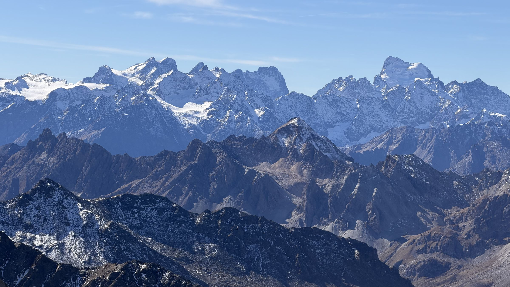
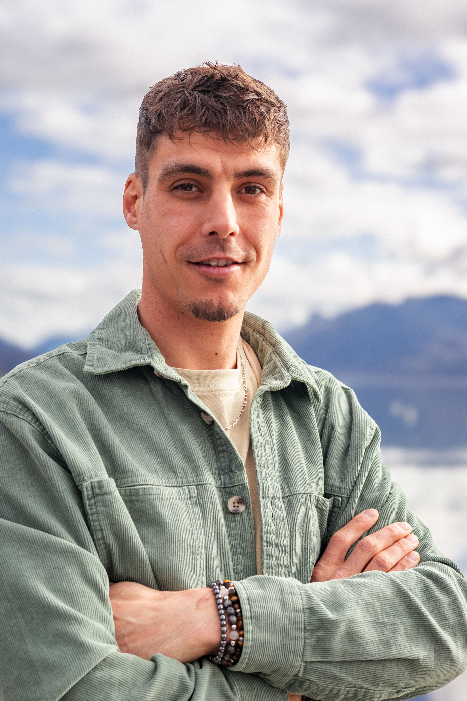

De l'atelier aux sommets. Je vous emmène marcher, respirer et voir la montagne autrement, dans toute la Haute-Savoie.
Découvrir mes randonnéesSelon moi, tout le monde a en soi la capacité d’affronter ses peurs, d’atteindre ses objectifs et de croire en ses rêves.
La seule différence entre ceux qui y arrivent et les autres ? Ils ont décidé de commencer.
« La seule personne à dépasser est celle que tu étais hier. »
Prouver qu'un homme cassé peut en reconstruire des milliers.
Être libre de choisir son chemin, avancer sans freins.
Reconstruire, progresser, ne jamais renoncer.
Quel que soit le sommet atteint, chacun a quelque chose à nous apprendre.
Écouter, respecter, aider sans juger.
Transmettre ce que la montagne et la vie m’ont appris.
J’habitais dans l’Ain, j’aimais beaucoup être en extérieur, très énergique, à faire plein d’activités.
Je déménage pour un nouveau poste de charpentier, au plus près de la montagne, pour aller travailler entre lac et montagne.
Charpentier, puis en atelier, à faire de la construction bois. Bac pro, BTS. Le geste précis, la rigueur, le sens du collectif.
Un coup d’arrêt, suite à un grave accident du travail : multiples fractures et une réathlétisation intense. Obligé de repenser ma vie, plutôt que de subir, j’ai choisi de me réinventer.
Installé en Haute-Savoie, autour d’Annecy, je me forme pour devenir accompagnateur en moyenne montagne. Un métier qui fait sens avec mon identité, en parallèle d’un projet sportif en trail. Liberté, dépassement de soi, partage : tout est réuni.

Je n’escalade pas une montagne pour qu’on me voie, mais pour voir le monde, et j’aimerais vous le montrer.
Traversées, bivouacs en milieu naturel, sorties à la journée : les épreuves et les défis font partie du chemin. Avec de la force, de la détermination et un peu d’ambition, on apprend à les surmonter. Réussir ensemble, c’est ce que je veux transmettre.
Voici mon carnet de bord en images, pour vous donner envie de partir vers ces aventures.
« L’essentiel se retrouve toujours là où le confort s’arrête. »
L'AMM est le professionnel qui encadre des groupes en randonnée, en sécurité, en faisant découvrir la faune, la flore et le patrimoine des massifs. C'est le métier que je construis aujourd'hui.
Lecture de la météo, du terrain, gestion du groupe : chaque sortie est préparée avec soin.
Faune, flore, géologie, histoire locale : on marche, mais on comprend aussi ce que l'on traverse.
Des sorties adaptées aux familles, aux débutants comme aux marcheurs plus aguerris.
Que chacun reparte en s'étant senti libre, serein, heureux, dépaysé.
Pas de jugement, que du partage et de la bienveillance. Je m'occupe de chaque personne, peu importe son niveau physique, et je l'aide à ressortir plus forte mentalement.
Les randonnées affichées sont des exemples. Je les remplacerai par tes vrais itinéraires.